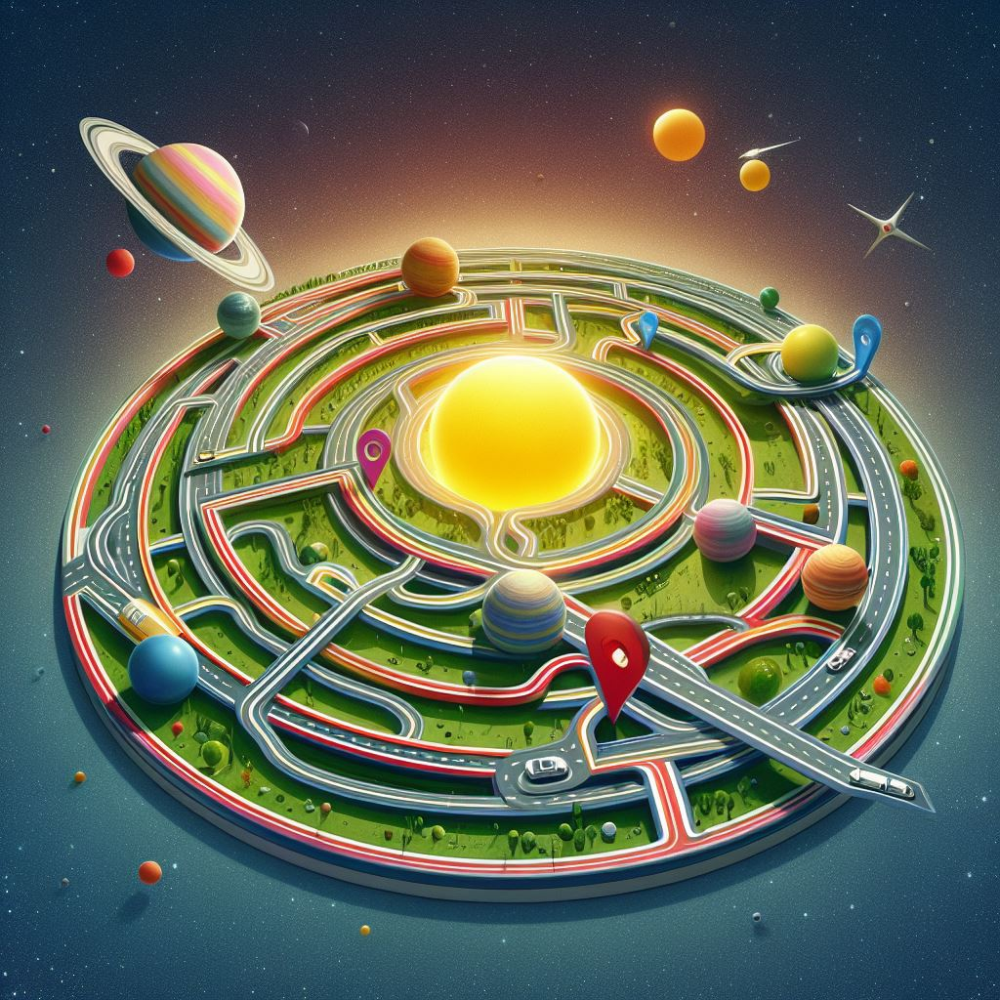

We are excited to welcome you to the Gateway Science Museum
Hours - Monday to Friday: 10am to 18pm, Saturday: 10am to 16pm and Sunday: Closed
Admission - Free to all visitors, guided tours are available, please contact for more details and prices
Dear Educators and Teachers,
Welcome to the Gateway Science Museum—an immersive space where learning becomes an adventure and curiosity knows no limits! We are thrilled to extend an invitation for you and your students to embark on an educational journey like no other.
Why Choose Gateway Science Museum for Your School Visit?
Interactive Learning: Our exhibits are designed to engage students through hands-on exploration, making science come alive and leaving a lasting impact.
Curriculum Integration: Whether you're focusing on biology, astronomy, physics, or environmental science, our exhibits align with various curricula, providing enriching experiences that complement classroom learning.
Educator Resources: Take advantage of our educator resources, including pre-visit materials, post-visit activities, and curriculum guides, to enhance the learning experience and extend the educational impact beyond the museum.
Customized Workshops: Tailor your visit to meet specific learning objectives with our customizable workshops. From interactive demonstrations to in-depth discussions, we can align activities with your curriculum goals.
Educational Staff: Our knowledgeable and friendly staff are ready to assist you and your students throughout your visit. Feel free to reach out to us for any special requests or to arrange additional educational support.
Practical Information for Your Visit:
Booking: To ensure a seamless experience, kindly book your visit in advance. Visit our website or contact our education coordinator to secure your preferred date and time.
Guided Tours: Enhance your students' experience with a guided tour led by our educators. Tours can be tailored to different age groups and subject interests.
Lunch Facilities: We provide designated areas for student lunches, making it convenient for your group to enjoy a meal together.
Transportation Assistance: If transportation is a concern, inquire about available assistance and resources to make your visit more accessible.
Booking Your Educational Adventure:
To book your school visit or inquire about specific educational offerings, please contact our Education Coordinator at [Contact Email/Phone]. We look forward to hosting your students at the Gateway Science Museum, where education and exploration unite to create lasting memories and ignite a lifelong passion for science.
Sincerely,
Spock
Education Coordinator
Gateway Science Museum
[Spock@gateway.com/111001101110000011011110110001101101011]
Directions and Transportation
The Gateway Science Museum is located at:
1 Planet Road, Planet Earth, third planet from the sun
By Personal transport:
From Milkyway:
Take the exit onto solar system Sol, toward the planet Mercury.
Follow signs for Mars and merge onto Halley's comet tail.
Continue on solar flare omega until you reach the Gateway Science Museum on your left.
By Public Transportation:
From Milkyway:
The museum is accessible by Firefly Transportation. Take NCC-1701, and get off at the Planet Road stop. From there, it's a short hoverboard ride to the museum.
Contact information
If you have any questions or need further assistance, please contact our Visitor Services at:
42424242 or Theentity@gateway.com.